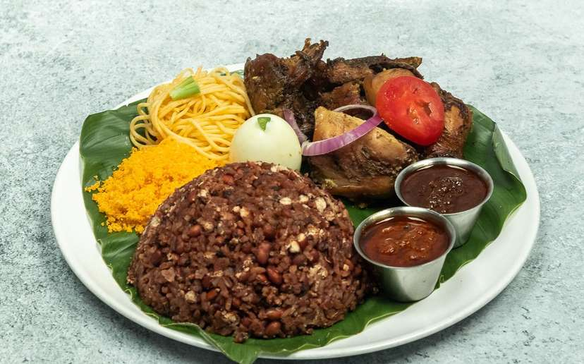

Ghanian Waakyee

Description
Ghanian waakyee is a very popular rice dish. It's made by boiling rice, beans and waakyee leaves together. Often served with spaghetti, boild egg and fried meat
Here is how to prepare it
First you'll need...
Ingredients
- 1 ½ cups black eyed peas, washed and drained
- 3-4 long sorghum leaves/waakye leaves, washed and cut in half(traditionally used, but optional)
- ¼ tsp baking soda
- 2 cups jasmine rice
- ¾ tsp salt
Directions
- In a pot add washed beans, 2 cups of water, sorghum leaves (if using) and baking soda. Cover your beans and bring to boil then reduce to simmer and cook for about an hour or until beans are tender.
- Around the 30-minute mark, top up beans with 2 more cups of water once the water has almost evaporated.
- After the beans are tender and fully cooked, remove the sorghum leaves, if used.
- Rinse jasmine rice with water until it runs almost clear.
- Add rice to beans and top with ¾-1 cup of water. Add salt. The amount of water you add just depends on how much water evaporated while cooking your beans, it is better to start with slightly less water and add a bit more later if necessary.
- Bring rice and bean mixture to a light boil over medium heat, then reduce to very low, cover and let cook for 30 minutes, stirring occasionally.
- Cover with parchment paper and pot lid and continue to cook for 10 minutes.
- If rice seems underdone, but not all the water has evaporated, just cover and continue cooking on low. If the rice seems under done but it is very dry, add ¼ cup of water, cover, and keep cooking in 10 minute increments on very low until done.
Homepage